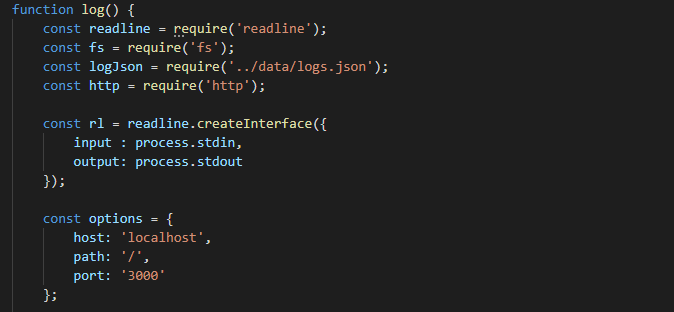
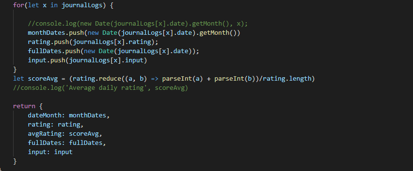
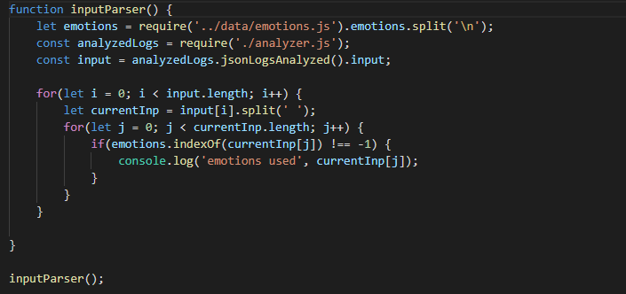
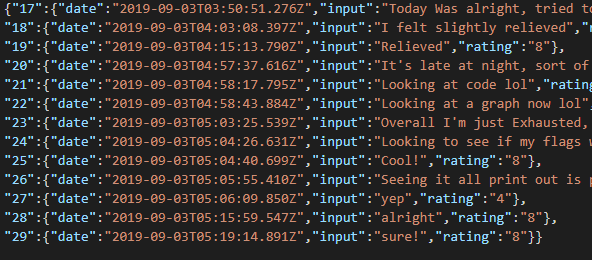

> Initial setup for the journaling server

> iterating over the feelings.json file to extract relevant information

> a straightforward word parser to help the user get more of an idea how they've been doing

> An exampe .json file showing the date of entry, and a few sample entries